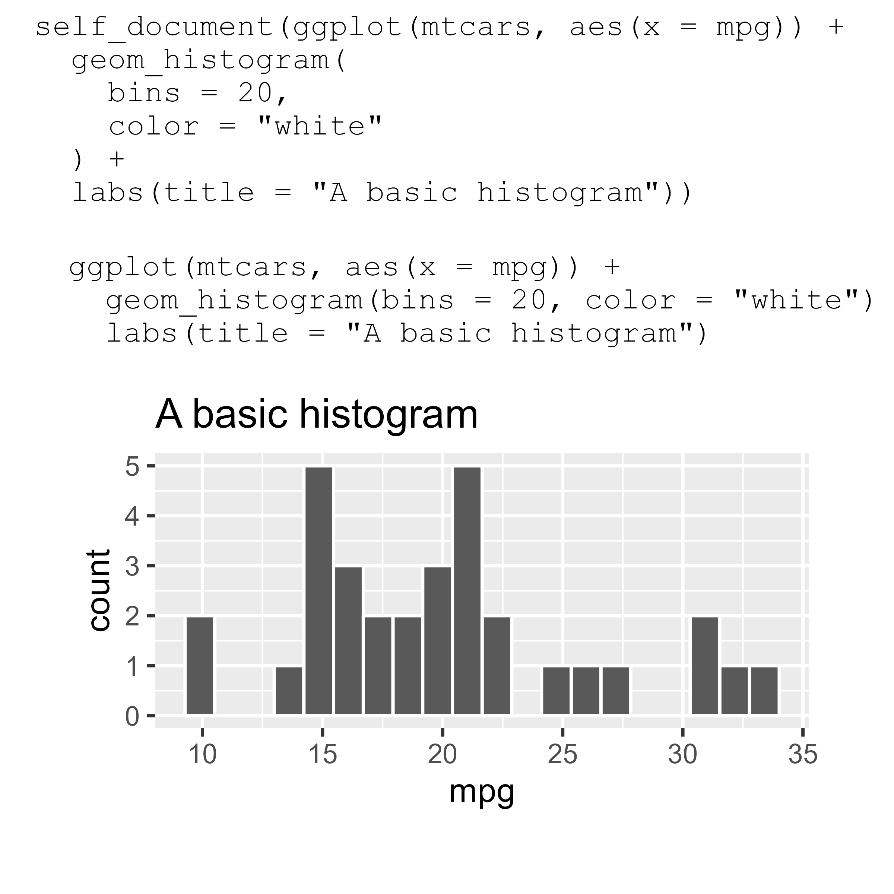
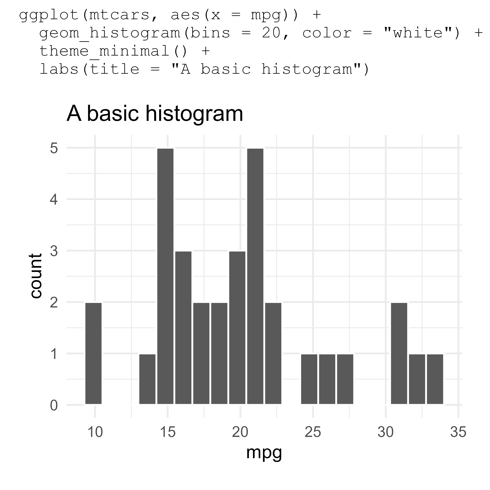

library(ggplot2)
self_document(
ggplot(mtcars, aes(x = mpg)) +
geom_histogram(bins = 20, color = "white") +
labs(title = "A basic histogram") +
theme(axis.title = element_text(debug = TRUE))
)When I am showing off a plotting technique in ggplot2, I sometimes like to include the R code that produced the plot as part of the plot. Here is an example I made to demonstrate the debug parameter in element_text():
Let’s call these “self-documenting plots”. If we’re feeling nerdy, we might also call them “qquines”, although they are not true quines.
In this post, we will build up a self_document() function from scratch. Here are the problems we need to sort out:
- how to put plotting code above a title
- how to capture plotting code and convert it into text
Creating the code annotation
As a first step, let’s just treat our plotting code as a string that is ready to use for annotation.
p_text <- 'ggplot(mtcars, aes(x = mpg)) +
geom_histogram(bins = 20, color = "white") +
labs(title = "A basic histogram")'
p_plot <- ggplot(mtcars, aes(x = mpg)) +
geom_histogram(bins = 20, color = "white") +
labs(title = "A basic histogram")In order to have a titled plot along with this annotation, we need some way to combine these two graphical objects together (the code and the plot produced by ggplot2). I like the patchwork package for this job. Here we use wrap_elements() to capture the plot into a “patch” that patchwork can annotate.
library(patchwork)
wrap_elements(p_plot) +
plot_annotation(title = p_text)Let’s style this title to use a monospaced font. I use Windows and like Consolas, so I will use that font.
# Use default mono font if "Consolas" is not available
extrafont::loadfonts(device = "win", quiet = TRUE)
monofont <- ifelse(
extrafont::choose_font("Consolas") == "",
"mono",
"Consolas"
)
title_theme <- theme(
plot.title = element_text(
family = monofont, hjust = 0, size = rel(.9),
margin = margin(0, 0, 5.5, 0, unit = "pt")
)
)
wrap_elements(p_plot) +
plot_annotation(title = p_text, theme = title_theme) 
One problem with this setup is that the plotting code has to be edited in two places: the plot p_plot and the title p_text. As a result, it’s easy for these two pieces of code to fall out of sync with each other, turning our self-documenting plot into a lying liar plot.
The solution is pretty easy: Tell R that p_text is code with parse() and evaluate the code with eval():
wrap_elements(eval(parse(text = p_text))) +
plot_annotation(title = p_text, theme = title_theme) This works. It gets the job done. But we find ourselves in a clumsy workflow, either having to edit R code inside of quotes or editing the plot interactively and then having to wrap it in quotes. Let’s do better.
Capturing plotting code as a string
Time for some nonstandard evaluation. I will use the rlang package, although in principle we could use functions in base R to accomplish these goals.
First, we are going to use rlang::expr() to capture/quote/defuse the R code as an expression. We can print the code as code, print it as text, and use eval() to show the plot.
p_code <- rlang::expr(
ggplot(mtcars, aes(x = mpg)) +
geom_histogram(bins = 20, color = "white") +
labs(title = "A basic histogram")
)
# print the expressions
p_code
#> ggplot(mtcars, aes(x = mpg)) + geom_histogram(bins = 20, color = "white") +
#> labs(title = "A basic histogram")
# expression => text
rlang::expr_text(p_code)
#> [1] "ggplot(mtcars, aes(x = mpg)) + geom_histogram(bins = 20, color = \"white\") + \n labs(title = \"A basic histogram\")"
eval(p_code)Then, it should be straightforward to make the self-documenting plot, right?
p_code <- rlang::expr(
ggplot(mtcars, aes(x = mpg)) +
geom_histogram(bins = 20, color = "white") +
labs(title = "A basic histogram")
)
wrap_elements(eval(p_code)) +
plot_annotation(title = rlang::expr_text(p_code), theme = title_theme) 
Hey, it reformatted the title! Indeed, in the process of capturing the code, the code formatting was lost. To get something closer to the source code we provided, we have to reformat the captured code before we print it.
The styler package provides a suite of functions for reformatting code. We can define our own coding styles/formatting rules to customize how styler works. I like the styler rules used by Garrick Aden-Buie in his grkstyle package, so I will use grkstyle::grk_style_text() to reformat the code.
p_code <- rlang::expr(
ggplot(mtcars, aes(x = mpg)) +
geom_histogram(bins = 20, color = "white") +
labs(title = "A basic histogram")
)
wrap_elements(eval(p_code)) +
plot_annotation(
title = rlang::expr_text(p_code) |>
grkstyle::grk_style_text() |>
# reformatting returns a vector of lines,
# so we have to combine them
paste0(collapse = "\n"),
theme = title_theme
) 
Putting it all together
When we write our self_document() function, the only change we have to make is using rlang::enexpr() instead rlang::expr(). The en-variant is used when we want to en-quote exactly what the user provided. Aside from that change, our self_document() function just bundles together all of the code we developed above:
self_document <- function(expr) {
monofont <- ifelse(
extrafont::choose_font("Consolas") == "",
"mono",
"Consolas"
)
p <- rlang::enexpr(expr)
title <- rlang::expr_text(p) |>
grkstyle::grk_style_text() |>
paste0(collapse = "\n")
patchwork::wrap_elements(eval(p)) +
patchwork::plot_annotation(
title = title,
theme = theme(
plot.title = element_text(
family = monofont, hjust = 0, size = rel(.9),
margin = margin(0, 0, 5.5, 0, unit = "pt")
)
)
)
}And let’s confirm that it works.
library(ggplot2)
self_document(
ggplot(mtcars, aes(x = mpg)) +
geom_histogram(bins = 20, color = "white") +
labs(title = "A basic histogram")
)
Because we developed this function on top of rlang, we can do some tricks like injecting a variable’s value when capturing the code. For example, here I use !! color to replace the color variable with the actual value.
color <- "white"
self_document(
ggplot(mtcars, aes(x = mpg)) +
geom_histogram(bins = 20, color = !! color) +
labs(title = "A basic histogram")
)
And if you are wondering, yes, we can self_document() a self_document() plot.
self_document(
self_document(
ggplot(mtcars, aes(x = mpg)) +
geom_histogram(bins = 20, color = "white") +
labs(title = "A basic histogram")
)
)
Alas, comments are lost
One downside of this approach is that helpful comments are lost.
self_document(
ggplot(mtcars, aes(x = mpg)) +
geom_histogram(bins = 20, color = !! color) +
# get rid of that grey
theme_minimal() +
labs(title = "A basic histogram")
)
I am not sure how to include comments. One place where comments are stored and printed is in function bodies:
f <- function() {
ggplot(mtcars, aes(x = mpg)) +
geom_histogram(bins = 20, color = !! color) +
# get rid of that grey
theme_minimal() +
labs(title = "A basic histogram")
}
print(f, useSource = TRUE)
#> function() {
#> ggplot(mtcars, aes(x = mpg)) +
#> geom_histogram(bins = 20, color = !! color) +
#> # get rid of that grey
#> theme_minimal() +
#> labs(title = "A basic histogram")
#> }I have no idea how to go about exploiting this feature for self-documenting plots, however.